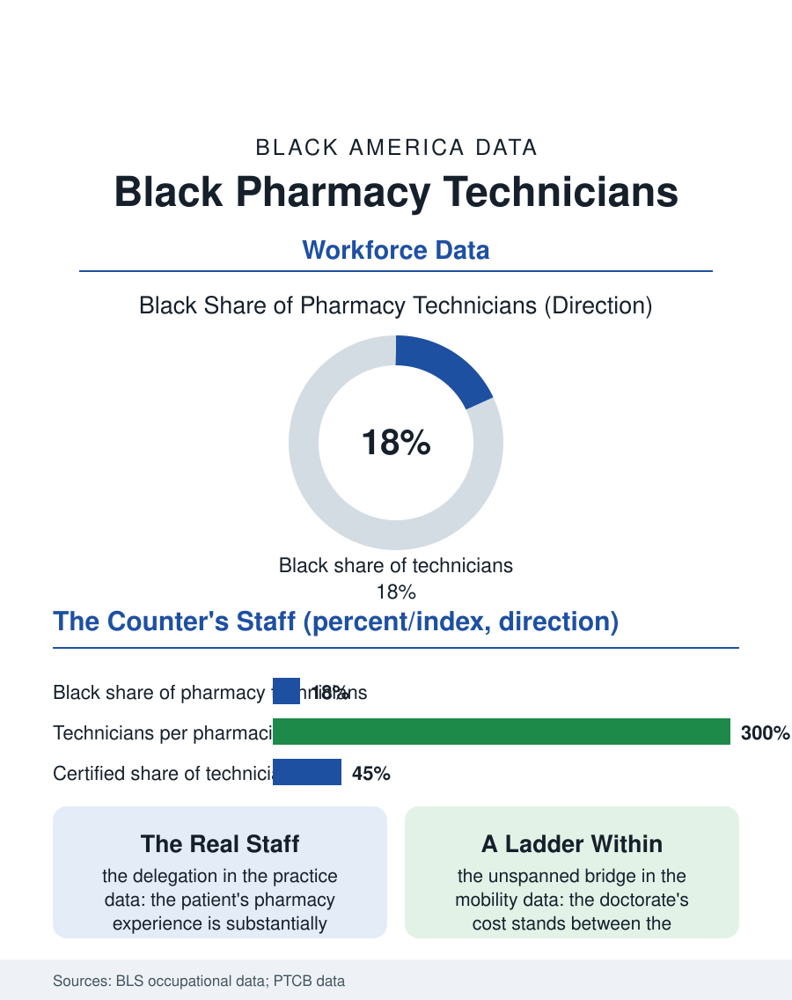

Black Employment
The Counter's Real Staff: Black Pharmacy Technicians
The counter's real staff, outnumbering the pharmacists, holding the neighborhood's pharmacology at the retail wage. The pharmacy technician file.

The pharmacy technician is the pharmacist's right hand and the pharmacy's public face, and the occupation, licensed or registered in most states in the current era, employs Black workers above their population share in the retail settings where most of the nation's prescriptions are actually handed over. This article reads the pharmacy technician file.
The Counter's Real Staff
The workforce's scale is the file's first fact: the technicians outnumber the pharmacists at the retail counter several to one, performing the count, the fill's preparation, the insurance's telephone labyrinth, and the customer's first interview, under the pharmacist's verification, so that the patient's pharmacy experience is substantially the technician's work wearing the pharmacist's license, a delegation the state boards have formalized across the recent decades as the technician's scope, the immunization and the point-of-care testing of the pandemic era's authorizations, expanded into the profession's permanent practice. The wage file is the occupation's tension: the retail technician's pay runs modestly above the retail floor against a skill and a liability the wage does not price, with the hospital and specialty tiers paying the premium the retail chains' scale resists, and the certification, the national examination whose pass confers the certified title, being the worker's own investment in the ladder the employers reward unevenly. The specialty pharmacy tier is the occupation's new summit in the wage data, the technicians who manage the oncology and transplant regimens' logistics in the closed pharmacies of the health systems, their certification and their accuracy priced at the premium the retail counter cannot match, and the ladder into it, from the retail floor through the hospital's IV room, is the occupation's real curriculum, walked by the technicians whose error-free years are their transcript. The compounding file, the sterile room's technicians who prepare the chemotherapy and the neonatal nutrition, carries the occupation's highest liability and its quietest pride, the double-check's culture being the pharmacy's conscience practiced at the technician's bench.
The Ladder's Short Climb
The occupation's mobility file is the file's honest center: the technician-to-pharmacist bridge is the road the workforce's imagination travels and its tuition rarely survives, the pharmacy doctorate's cost and years standing between the counter's two chairs in a gap no bridge program has yet spanned at scale, so that the ladder's real rungs are the lead technician's, the trainer's, the specialty and the automation roles within the technician's own expanding scope, a profession being built inside the occupation in the current decade's scope expansions. The automation file is the counter's horizon, the dispensing robot and the central fill and the mail facility absorbing the count's volume and pushing the store technician toward the clinical and the customer tasks the machine cannot take, a transition whose terms, the headcount's and the role's, the chains negotiate with the workforce the file counts.
The Neighborhood's Pharmacology
The pharmacy technician file closes on the counter's community function, because the technician is so often the neighbor, the pharmacy's staff drawn from its own blocks in the retail pattern, and the patient's actual medication education, the inhaler's demonstration, the insulin's coaching, the adherence package's explanation in the household's language, is delivered at her station more often than at the consultation window the law describes. The desert file's closures therefore remove her job and her function together from the neighborhood that can least spare either. The boards count the registered technicians in the hundreds of thousands, the Black share at the retail counter above the profession's. The file's last entry is the drive-through window's intercom and the counter's bell in the same hour, the technician's hands counting the month's supply for the elder she knows by name and by regimen, the pharmacology of the neighborhood practiced at the wage the file records and with the knowledge the wage does not measure, which is the occupation's whole account in one transaction. The mail and central fill facilities employ the occupation's industrial tier, the technicians of the warehouse pharmacies whose volume the retail counter's closures feed, a migration of the job from the neighborhood to the fulfillment map that mirrors the retail file's own, with the same neighborhood cost counted in the desert's ledger. The count continues in the worker's favor.
More in Black Employment
The Black Unemployment Rate: The Two-to-One Pattern
Black unemployment runs at roughly twice the White rate — 5.5 percent against 3.3 percent in annual averages — a ratio stable across five decades of federal data. How it is measured and why it persists.
Black Median Weekly Earnings: The 80-Cent Ratio
Black full-time workers earn a median of about $900 a week — roughly 80 cents for every dollar White workers earn. The BLS earnings data by group, gender, and occupation.
Black Labor Force Participation: Working at National Rates
Black labor force participation runs at roughly the national rate — and Black women participate at higher rates than White women. The BLS participation data.
Source: Bureau of Labor Statistics occupational employment data; Pharmacy Technician Certification Board workforce data.